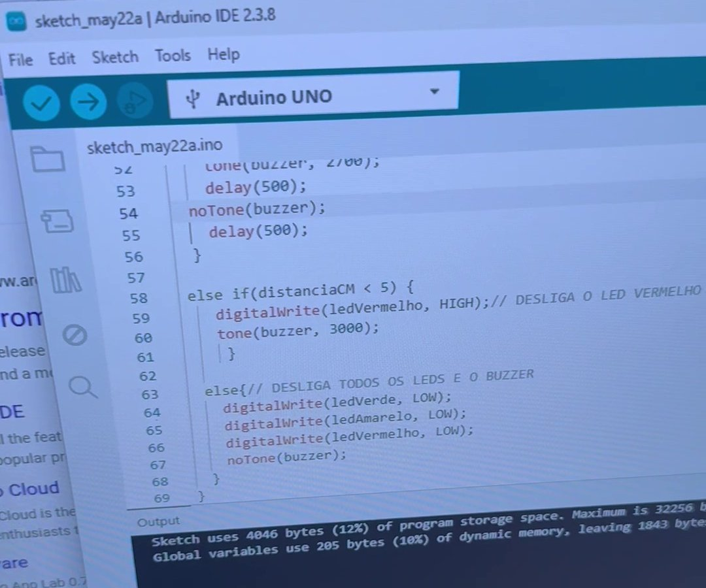

Formação Técnica / Projeto de IoT
Sensor de Ré
Sistema de aviso de proximidade com Arduino, como o sensor de estacionamento dos carros.
Objetivo
Medir a distância até um obstáculo e avisar com luz e som quando ele estiver perto demais.
Tecnologias
Arduino UNOSensor ultrassônicoLEDsBuzzerArduino IDE

Vídeo do projeto
O vídeo mostra o circuito montado, com o LED vermelho aceso, a ligação USB com o computador e o código na Arduino IDE.
Componentes
- Arduino UNO: placa que executa o programa e controla o circuito
- Sensor ultrassônico: mede a distância até o obstáculo
- LEDs verde, amarelo e vermelho: mostram o aviso por cor
- Buzzer: emite o aviso sonoro
- Protoboard e jumpers: ligam os componentes sem solda
Como funciona
- O sensor envia um pulso de ultrassom e espera o eco voltar.
- O programa guarda a medida na variável
distanciaCM, em centímetros. - As condições comparam a distância com os limites definidos.
- Com menos de 5 cm, o LED vermelho acende e o buzzer toca em 3000 Hz.
- No último caso, o programa desliga os LEDs e o buzzer.
O código
Este é o trecho final do código que aparece no vídeo. O digitalWrite liga (HIGH) ou desliga (LOW) um LED, o tone faz o buzzer tocar e o noTone faz parar.
else if(distanciaCM < 5) {
digitalWrite(ledVermelho, HIGH);
tone(buzzer, 3000);
}
else { // desliga todos os LEDs e o buzzer
digitalWrite(ledVerde, LOW);
digitalWrite(ledAmarelo, LOW);
digitalWrite(ledVermelho, LOW);
noTone(buzzer);
}
O que aprendi
Aprendi a ler um sensor, transformar a leitura em uma medida útil e usar estruturas de decisão para reagir a cada situação. É a mesma lógica de muitos projetos de IoT: medir, decidir e agir.